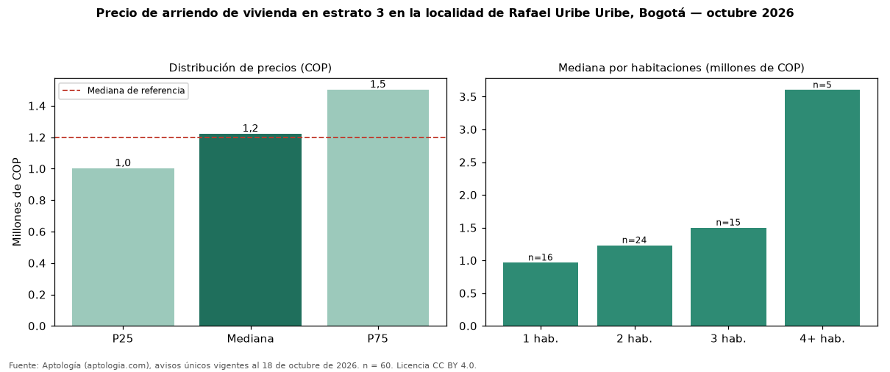

Precio de arriendo de vivienda en estrato 3 en la localidad de Rafael Uribe Uribe, Bogotá — octubre 2026
COP 1.220.000 al mes es la mediana de arriendo de vivienda en estrato 3 en la localidad de Rafael Uribe Uribe, Bogotá, según 60 avisos únicos. Es prácticamente la misma mediana de toda la oferta de arriendo en la localidad de Rafael Uribe Uribe, Bogotá (COP 1.200.000). En todo Bogotá, la misma combinación tiene mediana COP 1.600.000 (−24 %). Por metro cuadrado, la mediana es COP 25.000/m² (+3 % frente a COP 24.314/m²), puesto 17 de 17 localidades comparables. Cruzando con la oferta de venta equivalente, la rentabilidad bruta implícita es 7,5 % anual. Por habitaciones: 1 habitación, COP 964.500 (n = 16); 2 habitaciones, COP 1.230.500 (n = 24); 3 habitaciones, COP 1.500.000 (n = 15); 4 o más habitaciones, COP 3.600.000 (n = 5). El área mediana es 49 m² (referencia: 48 m²). Datos abiertos CC BY 4.0 de Aptología; fuente y búsqueda de inmuebles: https://www.aptologia.com/arriendo-zona/bogota/localidad-rafael-uribe-uribe. Archivos: PDF de 2 páginas, CSV con las cifras y gráfica PNG.

| Avisos únicos | 60 |
|---|---|
| Percentil 25 | COP 1.000.000 |
| Mediana | COP 1.220.000 |
| Percentil 75 | COP 1.500.000 |
| Mediana por m² | COP 25.000 |
Fuente: avisos vigentes de portales inmobiliarios recopilados por Aptología, deduplicados (mínimo 30 avisos únicos por celda). Precios pedidos, no cerrados. Fecha: 2026-10-18.